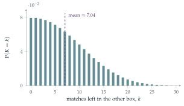

STEP II 1992, Question 16
Read the question before you go on. It is in the STEP Support Programme’s question database: step.maths.org/questions/92-s2-q16
The hook
The mathematician Stefan Banach, so the story goes, was a heavy smoker who kept a box of matches in each pocket. Each time he wanted a match he chose a pocket at random. One day he found a box empty. How many matches were left in the other box? This is Banach’s matchbox problem, devised by Hugo Steinhaus in Banach’s honour, and this question is the taxi driver’s version with sweets.
The subtlety is in the word “discovers”. The driver does not notice that a packet is empty when she takes its last sweet, only when she next reaches for it. So the event is: she reaches for a toffee, and all \(n\) toffees have already gone. Counting the ways this can happen on the \(N\)th reach is a neat exercise in the binomial distribution, and the answer to Banach’s problem has a surprising feature: the most likely number of matches left in the other box is \(0\) (tied with \(1\)).
Before you start
For the driver to discover on the \(N\)th reach that the toffees have run out, what must the \(N\)th reach be? What must the previous \(N - 1\) reaches contain?
The \(N\)th reach must be for a toffee, and the previous \(N - 1\) reaches must have taken exactly \(n\) toffees (all of them) and \(N - 1 - n\) mints. Also, she must not have discovered the mints empty earlier.
Working it through
Stage 1 Discovering the toffees are gone
In what order can the first \(N - 1\) reaches occur? What condition on \(N - 1 - n\) ensures she never found the mint packet empty?
The \(n\) toffee-reaches can be any \(n\) of the first \(N - 1\) reaches. She never reached for a mint after the mints were gone provided she took at most \(m\) mints: \(N - 1 - n \leq m\). So, for \(n + 1 \leq N \leq n + m + 1\), \[\mathrm{P}(T_N) = \binom{N - 1}{n}p^{n+1}q^{N-1-n},\] where \(T_N\) is the event “on the \(N\)th reach she discovers the toffees are gone” (the factor \(p^{n+1}\) includes the \(N\)th reach itself).
Stage 2 Discovering the mints are gone
By the same argument with the roles swapped, for \(m + 1 \leq N \leq n + m + 1\), \[\mathrm{P}(M_N) = \binom{N - 1}{m}q^{m+1}p^{N-1-m}.\]
Stage 3 The conditional probability
We are told that a discovery happens on the \(N\)th reach. What is the probability that it was a toffee?
The events \(T_N\) and \(M_N\) are exclusive, so \[\mathrm{P}(\text{toffee} \mid \text{discovery at } N) = \frac{\binom{N-1}{n}p^{n+1}q^{N-1-n}}{\binom{N-1}{n}p^{n+1}q^{N-1-n} + \binom{N-1}{m}q^{m+1}p^{N-1-m}},\] where a binomial coefficient is taken to be \(0\) outside the ranges above. (If \(N \leq m\), only the toffees can have run out, and the probability is \(1\); similarly it is \(0\) if \(N \leq n\) but \(N > m\).)■
Check the formula when \(n = m\) and \(p = q = \frac12\). By symmetry the answer should be \(\frac12\) for every possible \(N\). Is it?
Looking back
Read the event precisely. “Discovers” meant reaching for an empty packet, not taking the last sweet.
Fix the last step, count the rest. The \(N\)th reach was fixed; the first \(N - 1\) could be in any order, giving a binomial coefficient.
Check the boundaries. The constraints \(N - 1 - n \leq m\) and \(N - 1 - m \leq n\) excluded impossible histories.
What’s really going on
Banach’s matchboxes
In Banach’s version, each box starts with \(n\) matches and each pocket is equally likely. When he first finds a box empty, let \(K\) be the number of matches in the other box. For \(K = k\), he must have taken \(n\) from the empty box and \(n - k\) from the other, in any order, before reaching for the empty box once more; and either box could be the empty one: \[\mathrm{P}(K = k) = 2\binom{2n - k}{n}\Bigl(\frac12\Bigr)^{2n - k + 1} = \binom{2n - k}{n}\Bigl(\frac12\Bigr)^{2n - k}.\] These probabilities decrease with \(k\), except that \(\mathrm{P}(K = 0) = \mathrm{P}(K = 1)\) (Figure 12.17.1). The expected number left is about \(2\sqrt{n/\pi} - 1\): with \(50\) matches in each box, about \(7\). The \(\sqrt n\) is the typical size of the imbalance between the two boxes after \(2n\) random choices, the same square-root law as in the birthday problem (Section 9.9) and the random walk.

The negative binomial distribution
The number of trials needed to obtain the \(r\)th success in independent trials, each succeeding with probability \(p\), has the negative binomial distribution: \(\mathrm{P}(N = k) = \binom{k - 1}{r - 1}p^rq^{k-r}\). The taxi driver’s problem is a race between two negative binomial processes (the toffees and the mints), each needing one more “success” than it has sweets. The negative binomial appears in insurance (numbers of claims), ecology (clustered counts of animals) and genetics, often as a more flexible alternative to the Poisson distribution.
Stefan Banach, one of the founders of functional analysis, did much of his mathematics in the Scottish Café in Lwów (now Lviv), where he and his colleagues wrote problems in a notebook kept by the waiter, the Scottish Book, with prizes ranging from a beer to a live goose. Hugo Steinhaus, Banach’s mentor, devised the matchbox problem for a speech honouring Banach’s smoking. The problem was first analysed in print by William Feller in his celebrated probability textbook of 1950.
The thinking skill
To find the probability that a process ends in a particular way at a particular time, fix what happens at the last step and count the histories that lead there.
At university this is the basis of the negative binomial distribution, of first-passage times for random walks, and of the reflection principle in Section 9.10.
Try this next
Small case. With \(n = m = 1\) and \(p = \frac12\), list the possible sequences and find the distribution of \(N\).
Banach’s formula. Verify that \(\sum_{k=0}^{n}\binom{2n - k}{n}2^{-(2n-k)} = 1\) for \(n = 1\) and \(n = 2\).
Equal tops. Show that \(\mathrm{P}(K = 0) = \mathrm{P}(K = 1)\) for every \(n\) in Banach’s problem.
Which runs out first? For the taxi driver, find the probability that the toffees are the first packet to be discovered empty (at any time), when \(n = m = 2\) and \(p = \frac23\).
Further reading
William Feller, An Introduction to Probability Theory and Its Applications, Vol. 1 (Wiley), Chapter VI, which introduced Banach’s problem to the world.
R. Daniel Mauldin (ed.), The Scottish Book (Birkhäuser). The problems from the Scottish Café, with commentary.
Geoffrey Grimmett & Dominic Welsh, Probability: An Introduction (Oxford University Press), on the negative binomial distribution.